About
"Bièrecredi" (Beer + Wednesday) is a weekly tradition at Unity where coworkers gather to socialise over games, drinks, and snacks. To celebrate this community event, we created a custom branded beer featuring characters representing the main activities at Bièrecredi.With the help of our friends at Brasserie du Bois Blanc, the beer is now available for employees to enjoy.
Click here to view the project on Behance.
Click here to view the project on Behance.
Team
Valerie Bourdon — Illustration/Motion
Lynn Amhaz — Direction/Design
Catherine Vallières — Design/Photography
Gerardo Manjarrez — 3D/Motion
Russell Gagnon — Photography
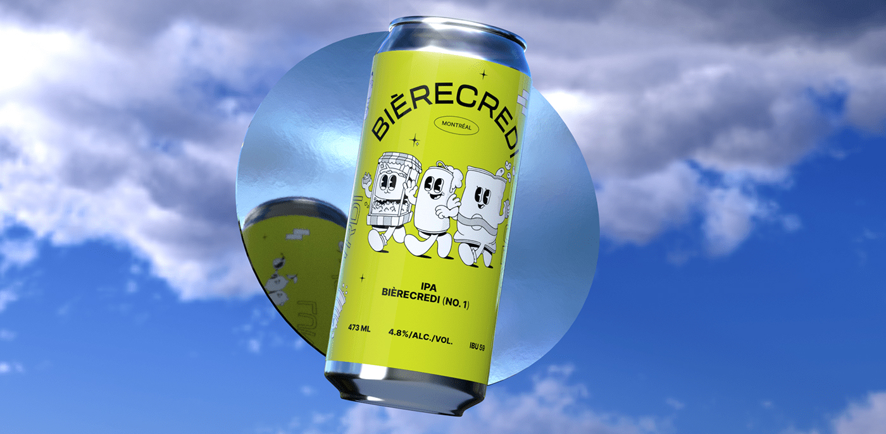
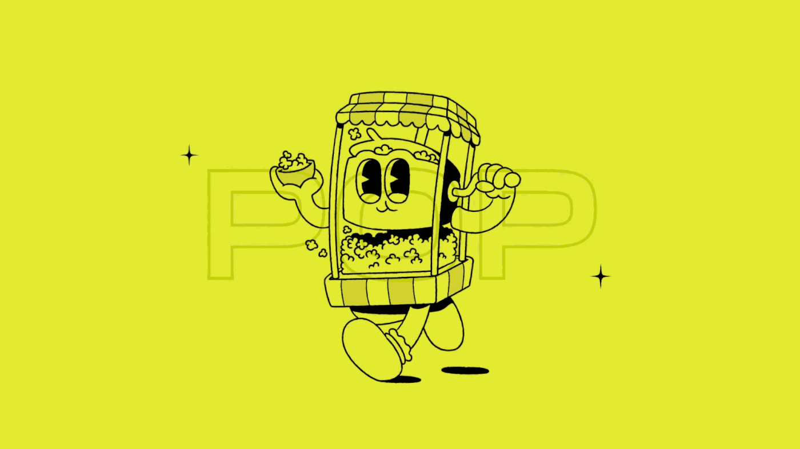
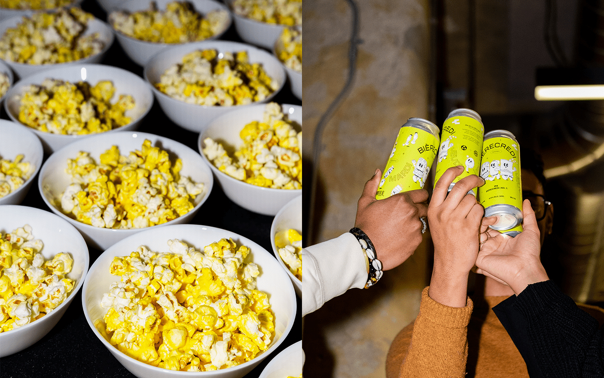
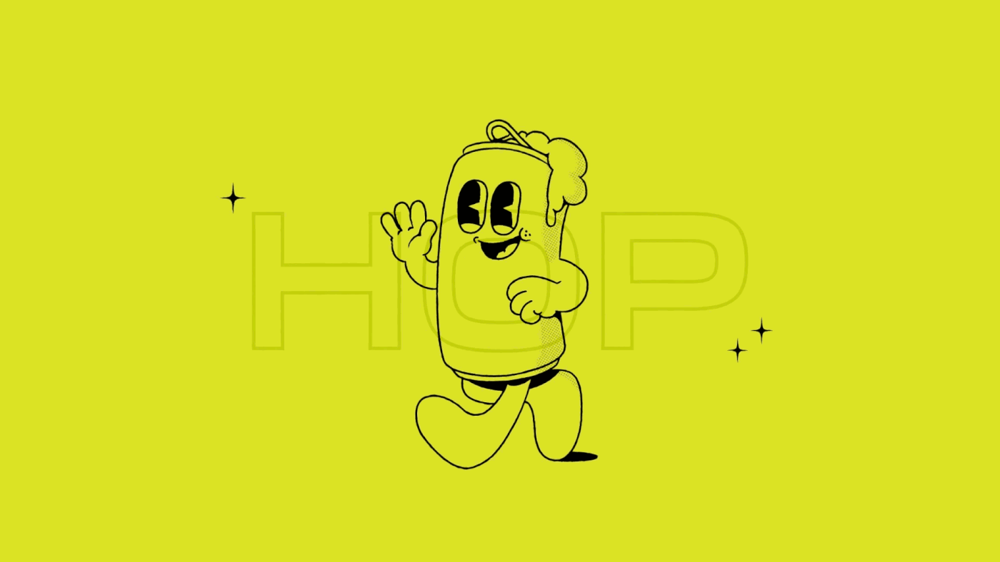
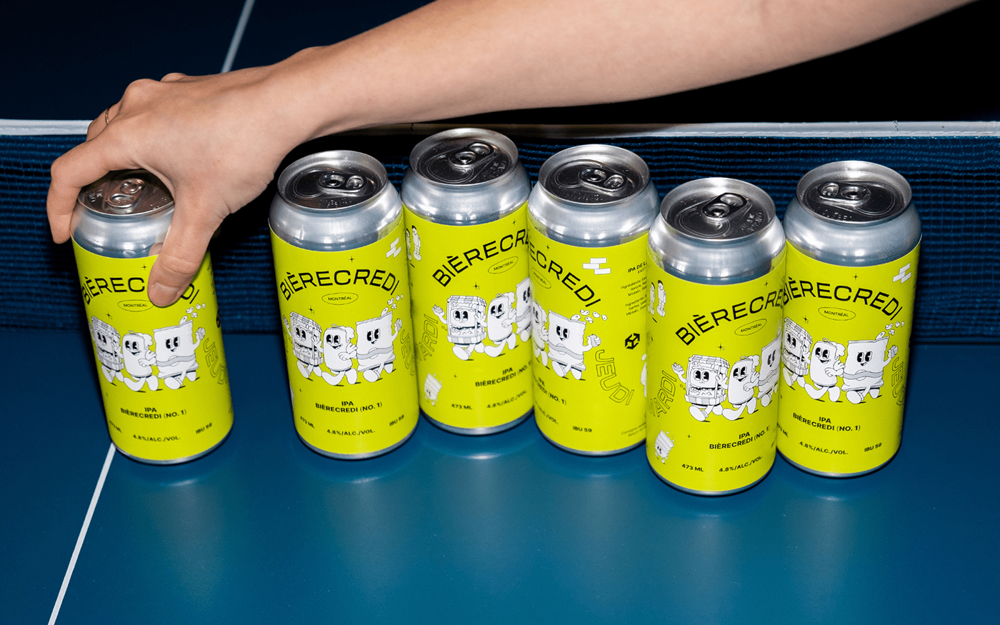
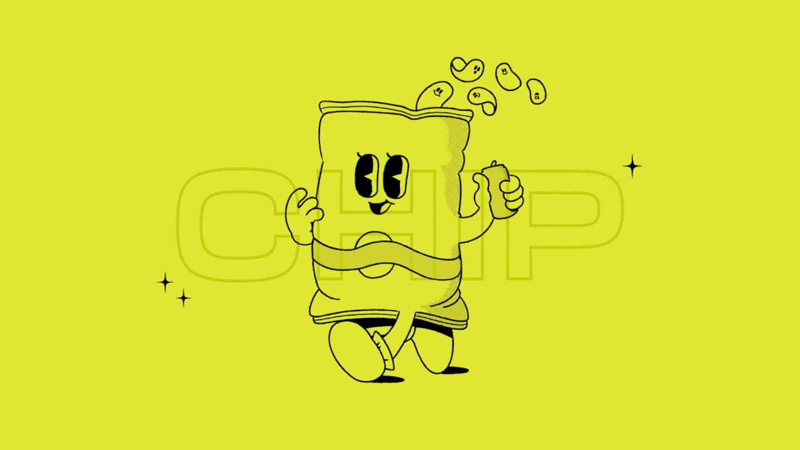
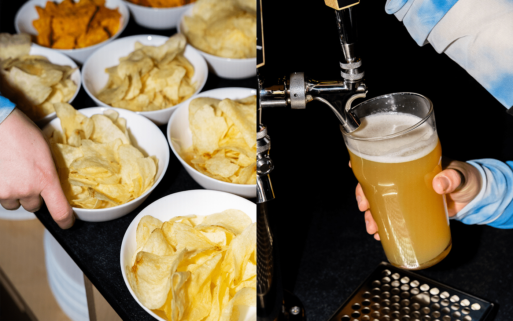
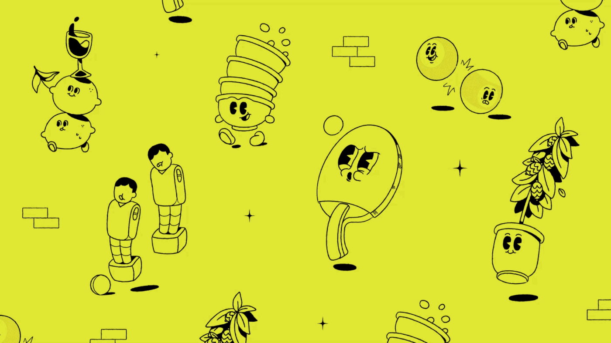
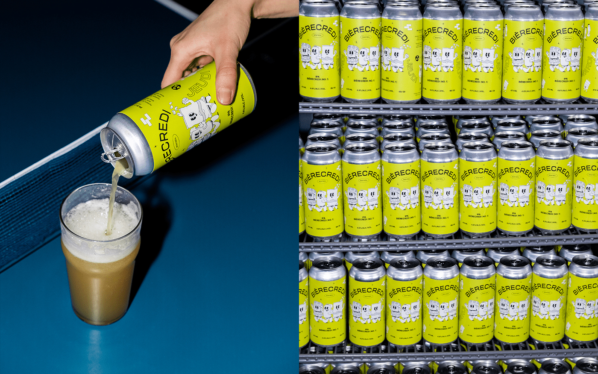
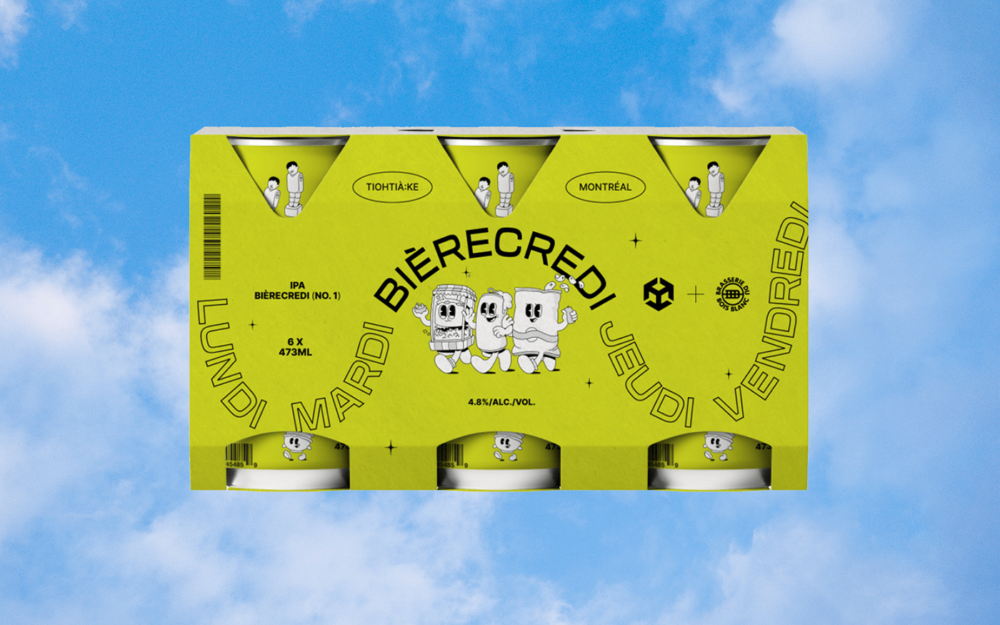
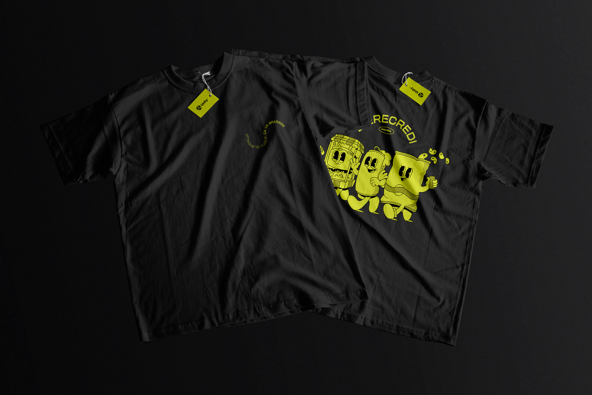
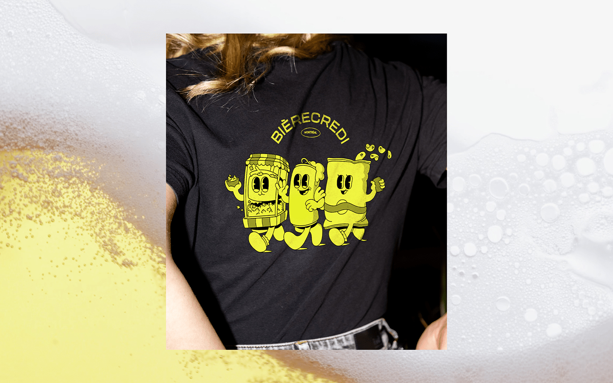
Lynn Amhaz — Direction/Design
Catherine Vallières — Design/Photography
Gerardo Manjarrez — 3D/Motion
Russell Gagnon — Photography
 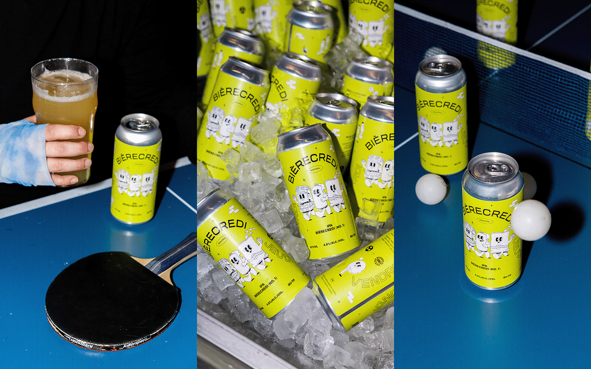
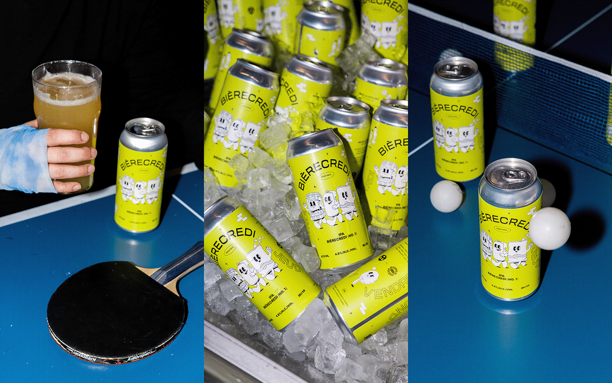
 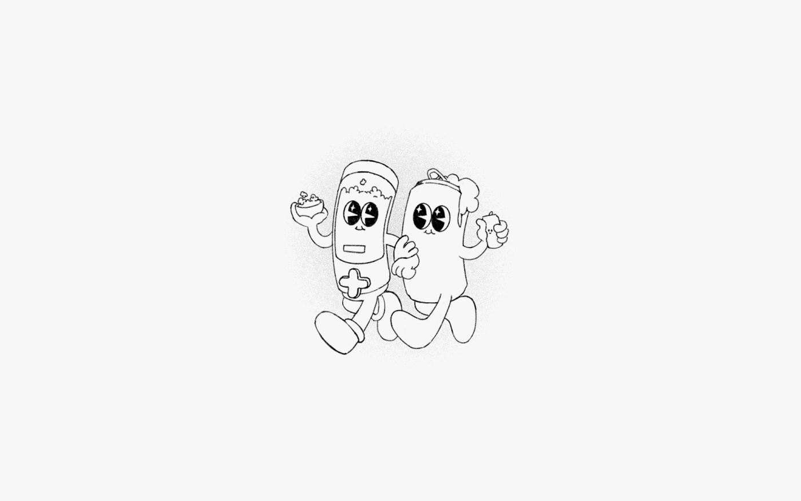
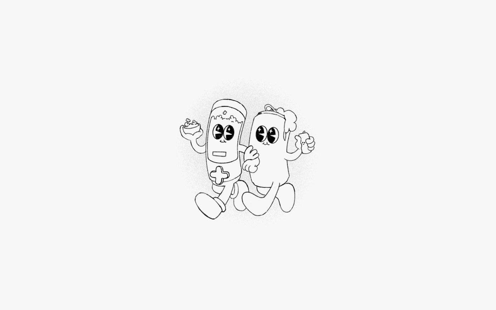